A hernia is a bulge that appears when an organ or tissue pushes through a weak spot in the body wall. In cattle, hernias are most common in calves — especially umbilical hernias at the navel — but adult cows and bulls can also develop inguinal and abdominal hernias.
Most hernias need surgical repair: the contents are returned to the abdomen and the defect in the body wall is closed with sutures. This guide explains the types of hernia in cattle, how they are diagnosed, the surgical repair step by step, and the aftercare that prevents recurrence.
What Is a Hernia in Cattle?
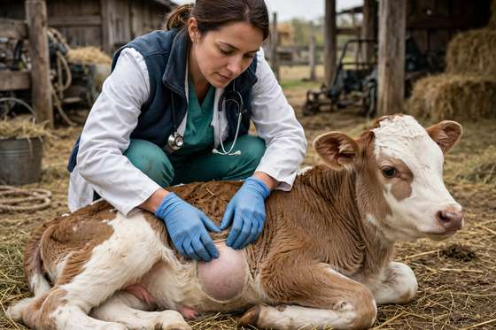
Umbilical hernia in a calf — the most common hernia in cattle
A hernia is a bulge that appears when an organ or tissue pushes through a weak spot or opening in the body wall. The bulge is covered by skin and a thin hernial sac. In cattle the contents are usually omentum (abdominal fat) or a loop of intestine.
A hernia has three parts: the hernial ring (the opening in the body wall), the hernial sac (the pouch of tissue around the bulge) and the hernial contents (what has pushed through). A hernia is called reducible when the contents can be pushed back into the abdomen, and irreducible when they cannot. If the blood supply to trapped intestine is cut off, the hernia is strangulated — a life-threatening emergency that needs immediate surgery.
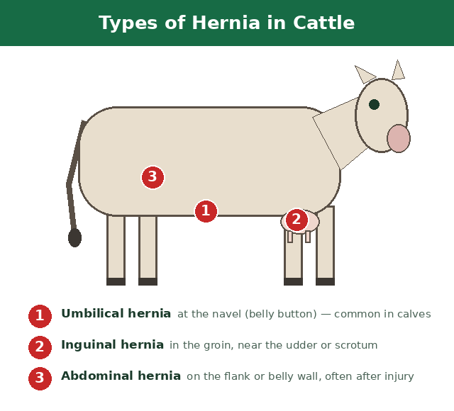
Three hernia sites in cattle — umbilical, inguinal and abdominal
Types of Hernia in Cattle
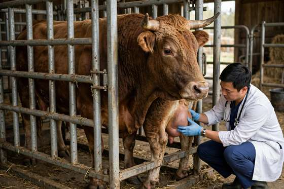
Inguinal hernia — swelling in the groin
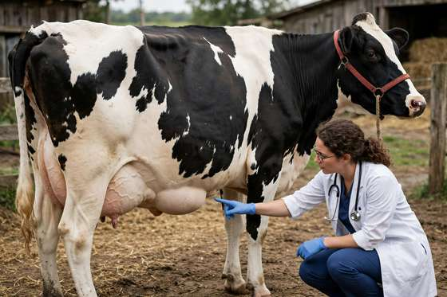
Abdominal hernia — swelling on the belly wall
1
Umbilical hernia(at the navel — the most common type, mainly in calves; usually congenital, when the umbilical ring fails to close after birth)
2
Inguinal hernia(in the groin — contents pass through the inguinal canal; seen in bulls and sometimes in calves; may extend into the scrotum)
3
Abdominal (ventral) hernia(on the flank or belly wall — usually caused by trauma such as a horn injury, a kick or a fall; can occur at any age)
Diagnosis of Hernia
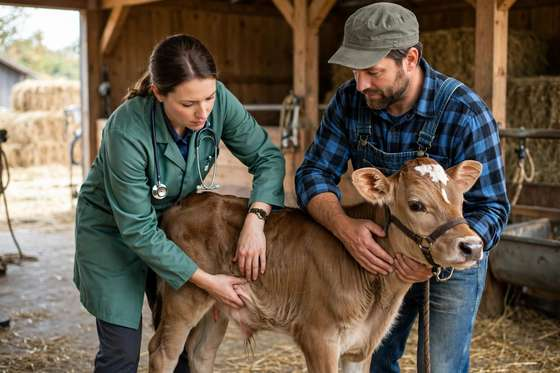
Diagnosis starts with careful palpation
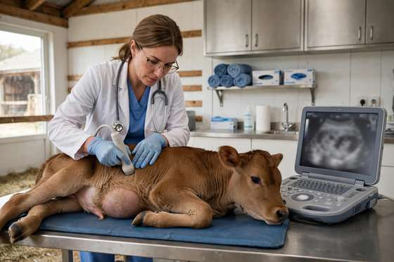
Ultrasound shows what is inside the sac
Diagnosis begins with a careful examination. The veterinarian notes the size and position of the swelling, feels whether it is soft or hard, and checks whether the contents can be reduced back into the abdomen. The size of the hernial ring is measured — small rings carry a higher risk of strangulation.
1
Palpation(feel the swelling, test if it is reducible, and measure the hernial ring with the fingers)
2
Ultrasound examination(confirms whether the sac contains omentum, intestine or fluid, and checks the blood supply)
3
Check for strangulation(a hot, painful, hard swelling with colic, loss of appetite and no dung means emergency surgery)
4
General health check(temperature, heart rate and general condition before anaesthesia and surgery)
Surgical Repair — Step by Step
Hernia repair (herniorrhaphy) is done under local anaesthesia with sedation, or under general anaesthesia for large hernias. The animal is fasted before surgery and the operation follows strict aseptic technique.
1
Examine and prepare(confirm the diagnosis, fast the animal, and prepare the surgical instruments and sterile drapes)
2
Restrain and anaesthetise(calves are usually cast and restrained; local anaesthesia is given around the hernia site)
3
Prepare the surgical site(clip the hair widely around the swelling, scrub with antiseptic, and drape the area)
4
Incise over the hernia(make an incision through the skin over the swelling and carefully open the hernial sac)
5
Reduce the contents(return the omentum or intestine to the abdomen; damaged tissue is removed if necessary)
6
Close the hernial ring(suture the edges of the ring together with strong absorbable sutures; a surgical mesh is used for large defects)
7
Close the skin and dress(close the skin with sutures, apply an antiseptic dressing, and give antibiotics and pain relief as prescribed)
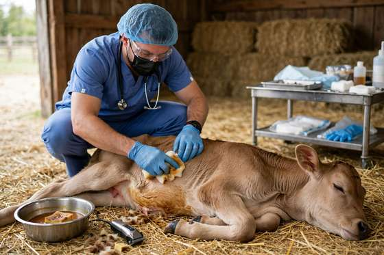
Clip and scrub — aseptic preparation
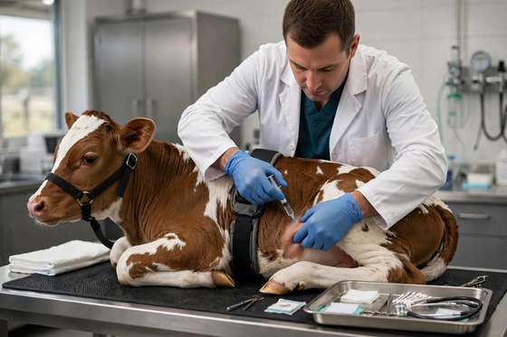
Local anaesthesia before surgery
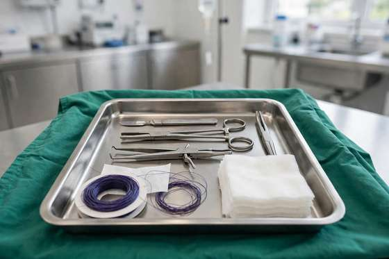
Sterile instruments ready for surgery
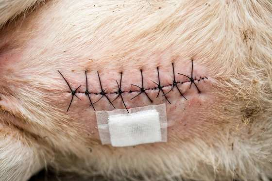
Neat skin closure after repair
Important: All surgical procedures must be performed by a qualified veterinarian under proper anaesthesia and aseptic conditions. Never attempt surgery on your own animals — incorrect technique causes infection, suffering and death.
Postoperative Care
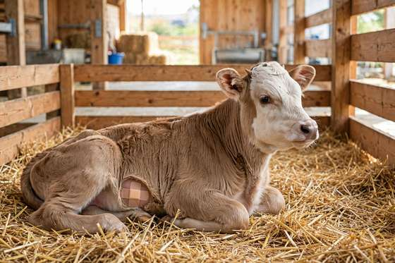
Recovery in a clean, dry pen after surgery
Good aftercare decides whether the repair holds. Keep the animal in a clean, dry pen with soft bedding and restrict rough movement for at least two weeks.
1
Check the wound daily(look for swelling, redness, discharge or broken sutures, and report problems to the veterinarian)
2
Give medicines as prescribed(complete the full course of antibiotics and pain relief given by the veterinarian)
3
Keep the pen clean and dry(dirty, wet bedding is the main cause of wound infection after surgery)
4
Restrict movement(avoid mounting, jumping and rough play for two weeks so the repair heals strongly)
5
Remove sutures on time(skin sutures are usually removed after 10 to 14 days, once the wound has healed)
Complications
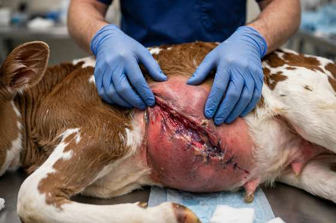
Wound infection — the most common complication
1
Wound infection(swelling, heat, redness and discharge at the wound; needs veterinary treatment and wound care)
2
Seroma(a soft swelling of clear fluid under the skin; small seromas absorb on their own, large ones need drainage)
3
Wound breakdown (dehiscence)(sutures give way, often from infection or too much movement; the wound must be cleaned and re-sutured)
4
Recurrence(the hernia comes back, usually because the ring was large, the sutures were under tension, or the animal was too active)
5
Peritonitis(infection inside the abdomen — rare, but serious; signs are fever, pain, loss of appetite and a stiff abdomen)
Prevention
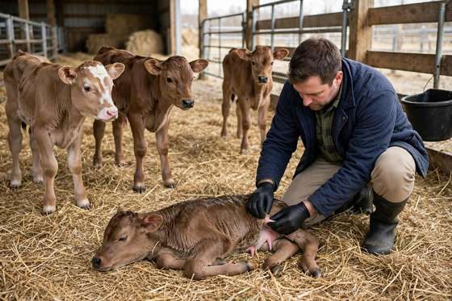
Good navel care at birth prevents many hernias
⚠ Important Tips:
Disinfect the navel of every newborn calf and keep the calving pen clean and dry.
Check calves weekly for swellings at the navel — early repair is simpler and safer.
Prevent trauma: dehorn cattle, avoid overcrowding, and remove sharp objects from pens and yards.
Do not breed from animals with hereditary umbilical hernia — the tendency passes to calves.
Call the veterinarian early for any swelling — a small hernia is easier and cheaper to repair than a large one.
Frequently Asked Questions
What is a hernia in cattle?
A hernia is a bulge that appears when an organ or tissue — usually omentum or intestine — pushes through a weak spot or opening in the body wall. The bulge is covered by skin and a hernial sac. In cattle the most common sites are the navel (umbilical), the groin (inguinal) and the flank or belly wall (abdominal).
What causes umbilical hernia in calves?
Umbilical hernia in calves is usually congenital: the navel opening (umbilical ring) fails to close completely after birth. Infection of the navel, weak abdominal muscles and heredity also play a role. Small hernias may close on their own by 6 months of age, but large or growing hernias need surgical repair.
How is a hernia diagnosed in cattle?
Diagnosis is mainly by palpation: the veterinarian feels the soft swelling and checks whether the contents can be pushed back into the abdomen (reducible) and how large the hernial ring is. Ultrasound helps confirm what is inside the sac and whether intestine is trapped. A hot, painful, hard swelling that cannot be reduced is an emergency — it may be a strangulated hernia.
How is hernia surgery performed in cattle?
The animal is restrained and given local anaesthesia or sedation. The site is clipped, scrubbed and draped. The surgeon makes an incision over the hernia, opens the sac, returns the contents to the abdomen, removes the sac, and closes the hernial ring with strong sutures — a mesh may be used for large defects. The skin is then closed and dressed.
What are the complications of hernia surgery?
The main complications are wound infection, swelling under the skin (seroma), breakdown of the wound (dehiscence) and recurrence of the hernia. Rare but serious complications include peritonitis if intestine was damaged. Good aseptic technique, correct suture tension and clean postoperative care greatly reduce these risks.
Can a hernia in a calf heal without surgery?
A very small umbilical hernia in a young calf sometimes closes on its own by about 6 months of age. Larger hernias, hernias that keep growing, and hernias in adult cattle do not heal by themselves and need surgery. Never try to push a hernia back and tie it — this can trap intestine and kill the animal.
How long does a calf take to recover after hernia surgery?
Most calves are back on their feet and eating the same day. The wound heals in about 10 to 14 days, when the skin sutures are removed. Keep the calf in a clean, dry pen, restrict rough movement for two weeks, and check the wound daily for swelling or discharge.
بچھڑے میں ناف کا ہرنیا کیا ہے اور اس کا علاج کیسے ہوتا ہے؟
ناف کا ہرنیا بچھڑے کی ناف والی جگہ پر ایک نرم ابھار ہوتا ہے جو پیدائش کے بعد ناف کے سوراخ کے بند نہ ہونے سے بنتا ہے۔ چھوٹا ہرنیا کبھی خود ہی بند ہو جاتا ہے لیکن بڑا ہرنیا آپریشن سے ٹھیک ہوتا ہے۔ ڈاکٹر بے ہوشی دے کر ہرنیا کی مرمت کرتا ہے اور ٹانکے لگاتا ہے۔ آپریشن کے بعد بچھڑے کو صاف ستھری جگہ پر رکھیں اور زخم کی روزانہ دیکھ بھال کریں۔
Key Takeaway
Hernia surgery in cattle is a routine, life-saving operation when done early by a qualified veterinarian. Small hernias are simpler to repair than large ones, so check calves regularly and act at the first sign of a swelling. Good navel care, clean pens and careful aftercare prevent most hernias and most complications.